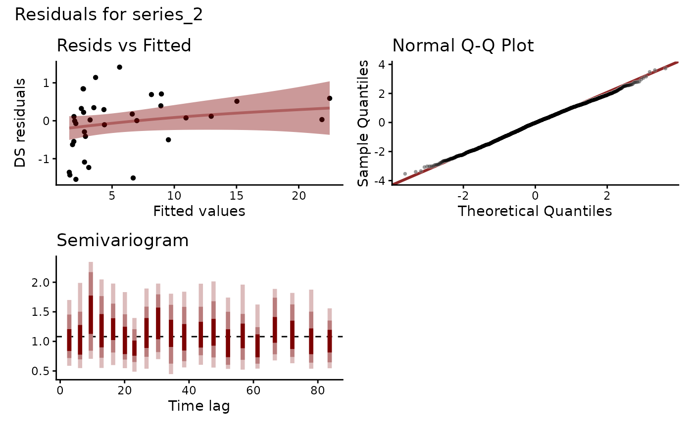
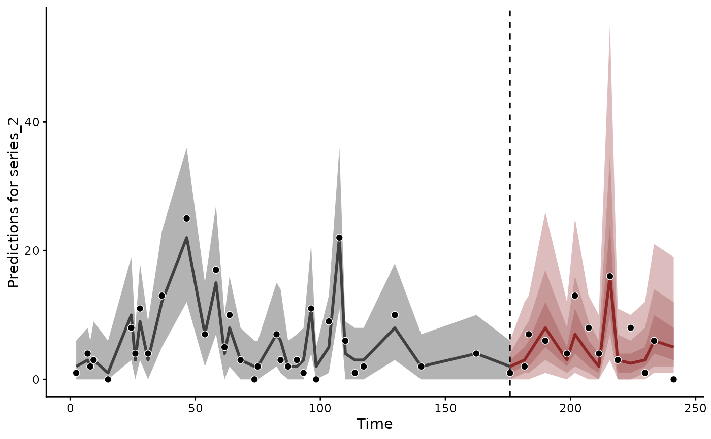

Specify the latent trend of a state-space model. Each constructor
goes inside trend_formula, as in trend_formula = ~ AR(p = 1). A
constructor records its arguments. The model evaluates them against
the data. The trends suit different series:
RW()A level that wanders with no pull back to a mean.
AR()Movement around a mean, with memory of the previous
ptimes. It is a common first choice.VAR()Series whose past values drive one another, such as predators and prey.
CAR()An AR(1) for series observed at irregular times.
ZMVN()Correlated effects with no dependence on time, such as among sites or species.
LLT()A level with a slope that changes over time, with an optional season.
PW()Linear or logistic growth with changepoints.
Each trend moves by a random innovation at every time step. Other
texts call it a process error or a shock. The innovations are
independent across series unless cor = TRUE.
Usage
RW(
time = NA,
series = NA,
ma = FALSE,
cor = NULL,
gr = NA,
subgr = NA,
n_lv = NULL,
trend_map = NULL,
df = Inf
)
AR(
time = NA,
series = NA,
p = 1,
ma = FALSE,
cor = NULL,
gr = NA,
subgr = NA,
n_lv = NULL,
trend_map = NULL,
coef_sharing = c("none", "shared", "hierarchical"),
df = Inf
)
CAR(
time = NA,
series = NA,
cor = FALSE,
n_lv = NULL,
trend_map = NULL,
df = Inf
)
VAR(
time = NA,
series = NA,
p = 1,
ma = FALSE,
cor = TRUE,
gr = NA,
subgr = NA,
n_lv = NULL,
trend_map = NULL
)Arguments
- time
The unquoted name of the
numericorintegervariable indatathat holds each row's time. Defaults totime.- series
The unquoted name of the
factorvariable indatathat names each row's series. Its levels fix the order of the series. A trend needs this column even for a single series. Defaults toseries.- ma
Logical. Include moving average terms of order1? Default isFALSE.- cor
Logical. Correlate the innovations of different series?TRUEestimates a full covariance matrix of the innovations when the data hold more than one series.AR()andRW()default toNULL. That meansFALSEfor an ungrouped trend andTRUEwhengrnames a grouping variable.VAR(),ZMVN()and groupedAR()andRW()trends always estimate correlations. They refusecor = FALSE.CAR()defaults toFALSE.- gr
An optional
factorindatathat groups the series, such as region. Each level ofgrtakes its own correlation matrix among the innovations of its series. The matrices are pooled toward one global matrix:\(\Omega_{group} = \alpha_{cor}\Omega_{global} + (1 - \alpha_{cor})\Omega_{group, local}\)
Here \(\Omega_{global}\) is shared by every group, \(\Omega_{group, local}\) is the deviation of one group and \(\alpha_{cor}\) sets the weight on the global matrix. An \(\alpha_{cor}\) near 1 pools the groups strongly. Without
subgr, the series column names the series within each group.Within a
VAR()it sets up a hierarchical panel vector autoregression. Each group learns its autoregressive, moving-average and correlation matrices from shared hyperparameters. The groups do not interact.Two constraints apply to hierarchical trend models:
Each series belongs to one group.
mvgam()refuses agrthat varies within a series.Every group must hold the same number of series. The Stan program sizes each group's correlation block from one shared count. Validation refuses unbalanced groups before fitting.
- subgr
A subgrouping
factorvariable naming the time series within each level ofgr. Defaults toseries. A model with hierarchical correlations builds its series fromgrandsubgr, anddatathen needs noseriescolumn.For example, to model counts of several species (
speciesindata) across three regions (region) with innovations correlated within regions, specifygr = regionandsubgr = species.mvgam()then builds the series asseries = interaction(gr, subgr, drop = TRUE, sep = "_",lex.order = TRUE)A region
r1and a speciessp1give the series"r1_sp1". The levels sort lexically.summary(),plot()andforecast()all label that series"r1_sp1". Aseriescolumn that disagrees with the derived series is replaced by it, with a warning.- n_lv
The number of latent factors to estimate for dynamic factor models. When
n_lvis smaller than the number of series, the latent processes are modelled asn_lvfactors with estimated loadings onto the series. Defaults toNULL, in which case one latent process is used per series.- trend_map
Optional specification of which latent process each series maps onto. It fixes the loadings of a dynamic factor model. See
mvgamfor the accepted formats. Defaults toNULL.- df
Degrees of freedom for the latent process innovations. Defaults to
Inf, which gives Gaussian innovations: a t with infinite degrees of freedom is a normal. Setdf = NAto estimate them, or supply a number above2to fix them.Finite degrees of freedom let the latent process absorb an occasional large shock while
sigma_trendstays at the scale of ordinary variation. That suits boom-and-bust population series and outbreak dynamics. The innovations follow a multivariate t. Because it shares one innovation scale across the series at each time point, large innovations tend to occur together. Each series keeps its own direction and magnitude. A shock in one series says nothing about the sign of the others. One series can also stay unmoved by an event that moves its neighbours.corsets the correlation between series exactly as it does for Gaussian innovations. The degrees of freedom set how heavy the tails of the innovations are.When
df = NAthe degrees of freedom are estimated asnu_trend, with a defaultgamma(4, 0.3)prior. Thepriorargument replaces it, for exampleprior(gamma(2, 0.1), class = "nu_trend").get_priorlistsnu_trendwith the other trend classes.Three caveats apply:
A fixed value must exceed
2. Below it the innovations have no finite variance. An autoregressive trend then has no stationary covariance to start from.The first states of an autoregressive trend take the stationary mean and covariance. Under t innovations the true stationary distribution has heavier tails than that.
Only the tails of the latent process inform the degrees of freedom. Below roughly 200 time points their posterior stays close to the prior.
VAR()samples its states directly andPW()has no innovations. Neither takesdf.- p
The autoregressive lags. The accepted form depends on the trend type:
For
AR()models: a positive integer or a positive integer vector. A scalarp = kis the textbook AR(k) and expands to the consecutive lags1:k. The fit then estimatesar1_trendthroughark_trend. A vectorp = c(...)selects a sparse lag set.p = c(1, 12)declares onlyar1_trendandar12_trend, a seasonal AR with no intermediate lags.p = c(2, 4)declares onlyar2_trendandar4_trend.For
VAR()models: a positive integer.p = kis the VAR(k), with one coefficient matrix for each of the lags1:k. The stationarity prior of Heaps (2023) needs consecutive lags. A sparse lag vector is not supported. UseAR(p = c(...))for sparse lags.
- coef_sharing
How the coefficients of
AR()vary across the latent series."none"(the default) estimates each series' coefficients independently."shared"estimates one coefficient per lag for every series."hierarchical"pools each series' coefficient toward a mean for its lag, asar{lag}_trend[j] ~ normal(mu_ar{lag}_trend, sigma_ar{lag}_trend). The section on AR coefficient sharing lists the parameters each setting samples.
Value
An object of class mvgam_trend holding the
constructor's arguments. mvgam() builds the trend from it.
Details
A trend_formula takes one trend constructor. The arguments of that
constructor express richer dynamics:
For seasonal patterns:
AR(p = c(1, 12)). A sum such asRW() + AR(p = 12)is refusedFor several time scales:
AR(p = c(1, 7, 30))for daily, weekly and monthly lagsFor cross-series dynamics:
VAR(p = 2)
Stationarity of AR(p): a consecutive lag set with
p >= 2 is sampled as partial autocorrelations,
ar1_pacf_trend through ark_pacf_trend, each
declared on (-1, 1). The Levinson-Durbin recursion derives
ar1_trend through ark_trend from them. Every
summary, forecast and hypothesis test uses those coefficients.
Any vector of partial autocorrelations in (-1, 1) gives a
stationary process. Bounding the coefficients directly admits
explosive draws. With ar1_trend and ar2_trend both
at 0.9 the declared bounds hold, yet that process grows without
limit. Priors for these models name the ar{k}_pacf_trend
classes.
AR(p = 1) samples ar1_trend directly. At one lag
the declared interval is already the stationary region. A sparse
lag set such as AR(p = c(1, 12)) also samples
ar{k}_trend directly. It fixes its intermediate
coefficients at zero, a constraint the recursion cannot express. It
carries no stationarity guarantee. Both take priors on the
ar{k}_trend classes.
CAR() steps a continuous-time AR(1) over the gaps the data
records. A gap dt is measured in units of the median gap
between two consecutive observations of one series.
ar1_trend and sigma_trend then describe a typical
step. The model is the same whatever unit the time column records.
Across a gap dt the decay is
ar1_trend^dt and the innovation standard deviation is
sigma_trend * sqrt((1 - ar1_trend^(2 dt)) /
(1 - ar1_trend^2)). The decay and the innovation scale together.
The marginal variance is then
sigma_trend^2 / (1 - ar1_trend^2) at every occasion of an
irregular grid. The first state comes from that marginal.
CAR(cor = TRUE) correlates the innovations of several
series. Sigma_trend is their covariance over a gap of one.
Series a and b have stationary covariance
Sigma_trend[a, b] / (1 - ar1_trend[a] * ar1_trend[b]). The
innovations across a gap dt have that covariance times
1 - (ar1_trend[a] * ar1_trend[b])^dt. This is the exact
transition of the continuous-time process. A time point added
between two others leaves the model for the remaining times
unchanged. L_Omega_trend is the Cholesky factor of the
correlation between the series' shocks over an instant. Its prior
is placed there. The correlation of Sigma_trend is
closer to zero than that correlation when the series damp at
different rates. On a regular grid the likelihood is that of
AR(p = 1, cor = TRUE) with positive coefficients.
The series of a CAR() trend may be observed at their own
times. The trend has a state for every series at each time any
series was observed. A series contributes to the likelihood at the
times it has a row. This is the model a frame gives when every
unobserved time of a series has a row with a missing response.
forecast() takes each series at its own future times.
df needs the series on shared times. With one mixing scale
per time, a multivariate t would let the times of one series change
the trend of another.
Note
VAR fits and init = 0: the stationary map of Heaps
(2023) takes matrix square roots by eigendecomposition. The
gradient of an eigendecomposition divides by differences between
eigenvalues. init = 0 in the call to mvgam() sets every raw
coefficient to zero and every innovation scale to one. Each matrix
the map decomposes is then the identity, with repeated eigenvalues,
and the first gradient is not finite. Leave init at its default
random draws for VAR() fits. AR(), RW(), CAR() and ZMVN()
are unaffected.
AR coefficient sharing
Each coef_sharing setting samples its own Stan parameters:
| coef_sharing | Stan parameters with priors |
"none" | ar{lag}{stem}_trend per series |
"shared" | shared_ar{lag}{stem}_trend (one per lag) |
"hierarchical" | mu_ar{lag}{stem}_trend,
sigma_ar{lag}{stem}_trend |
{stem} is _pacf for a contiguous lag set of two or more
lags, where the sampled quantity is a partial autocorrelation,
and empty for p = 1 and for a sparse lag set such as
p = c(1, 3). AR(p = 2) samples ar1_pacf_trend and
AR(p = 1) samples ar1_trend.
Every setting defines the same ar{lag}_trend[j] in
transformed parameters. Forecasting, IRF, FEVD and summaries use
that quantity whatever the setting. A prior on any sampled
parameter is set with brms::set_prior(class = "<name>").
get_prior(mvgam_formula(...)) lists the parameters the chosen
coef_sharing samples.
Parameter Naming Convention
Every trend parameter carries a _trend suffix, which keeps it
distinct from an observation model parameter of the same name. The
innovation scale is sigma_trend, the moving-average
coefficient theta1_trend, the autoregressive coefficients
ar1_trend to ark_trend and the VAR coefficient
matrices Phi_trend. Priors take these class names, as in
prior(inv_gamma(5, 1), class = sigma_trend). Parameter
extraction takes the same names.
Identification
A factor model with sampled loadings fits equally well under any reordering or sign change of its factors. Some models also fit equally well under any rotation. mvgam reports one version, chosen by the dynamics of the factors:
AR()factors take their own coefficients, as doRW()andAR()factors withma = TRUE. A rotation would mix those coefficients. After sampling, the factors of every draw are reordered and signed to agree with one reference. The loadingsZ, the factor pathslv_trendand the coefficientsar1_trendortheta1_trendmove together. Factors are numbered by the variance they explain, largest first.RW(),VAR()andZMVN()factors without a moving-average term are unchanged by rotation. So areAR()factors withcoef_sharing = "shared"and no moving-average term. Following Heaps & Jermyn (2024), generated quantities rotate each draw to lower-triangular loadingsZ_tildewith a non-negative diagonal. The factor paths rotate tolv_trend_tilde. A VAR factor model rotates its coefficients toPhi_trend_tilde.
Post-fit methods use the identified loadings and factor paths.
shared_variation() and residual_cor() are the same under every
version.
A trend_map keeps its fixed entries on Z exactly. A
by = lv_axis() smooth ties each factor to its own covariate
effect. Neither takes a rotation. For a model with every loading
sampled, the loadings_prior
argument of mvgam() replaces the default iid Student-t prior
on Z with a structured matrix-normal prior. That prior is built
from per-series features, pairwise distance matrices or both. See
mvgam for its arguments.
Setting loadings_prior = "mgp" (or
loadings_prior = list(column_shrinkage = "mgp")) switches
the column scaling to the multiplicative gamma process prior of
Bhattacharya & Dunson (2011), which shrinks later columns of Z
toward zero with increasing strength. n_lv is then a truncation
ceiling on the factor count. active_factors reports
the posterior distribution of the number of active factors.
References
Heaps, S. E. and Jermyn, I. H. (2024). Structured prior distributions for the covariance matrix in latent factor models. Statistics and Computing, 34:143. doi:10.1007/s11222-024-10454-0
Heaps, S. E. (2023). Enforcing stationarity through the prior in vector autoregressions. Journal of Computational and Graphical Statistics, 32(1):74-83. doi:10.1080/10618600.2022.2079648
Clark NJ, Ernest SKM, Senyondo H, Simonis J, White EP, Yenni GM and Karunarathna KANK (2025). Beyond single-species models: leveraging multispecies forecasts to navigate the dynamics of ecological predictability. PeerJ, 13, e18929. https://doi.org/10.7717/peerj.18929
See also
get_prior() lists the parameters a trend adds and their
default priors. residual_cor(), irf(), fevd() and
stability() interpret fitted latent dynamics. forecast()
propagates them forward. The
overview vignette compares
the trend types. The VAR article
interprets a fitted VAR() with irf(), fevd() and
stability(). The
hierarchical VAR article
fits gr and subgr. The
dynamic factor vignette fits n_lv and
trend_map.
Other trend models:
LLT(),
PW(),
ZMVN(),
list_trend_types(),
lv_axis()
Examples
# \dontrun{
# A constructor records a trend before any data are seen. Printing
# one shows the settings the model will use
AR(p = c(1, 12))
#> mvgam trend specification:
#> Type: AR({1, 12})
#> Time variable: time
#> Series variable: series
VAR(p = 2, ma = TRUE)
#> mvgam trend specification:
#> Type: VARMA(2, 1)
#> Time variable: time
#> Series variable: series
#> Correlated innovations
RW(gr = region, subgr = species)
#> mvgam trend specification:
#> Type: RW
#> Time variable: time
#> Series variable: series
#> Correlated innovations
#> Hierarchical grouping: region
#> Subgroups: species
# A regularly spaced series usually starts with AR(p = 1). ?mvgam
# fits one. The rest of this example handles irregular sampling.
# Three Poisson series with a seasonal cycle, each surveyed at its
# own irregular times. sim_mvgam(type = 6L) draws the gaps between
# occasions. Every series keeps about 60 percent of the occasions
set.seed(11)
simdat <- sim_mvgam(type = 6L, family = poisson(), n_series = 3L,
n_timepoints = 80L)
keep_some <- function(d) d[runif(nrow(d)) < 0.6, ]
own_times <- keep_some(simdat$data_train)
# The parameters a trend adds, with their default priors, before
# any fitting
get_prior(
mvgam_formula(y ~ s(season, bs = "cc", k = 6),
trend_formula = ~ CAR(cor = TRUE)),
data = own_times,
family = poisson()
)
#> prior class coef group resp
#> student_t(3, 1.6, 2.5) Intercept
#> student_t(3, 0, 2.5) sds
#> student_t(3, 0, 2.5) sds s(season, bs = "cc", k = 6)
#> exponential(2) sigma_trend
#> normal(0, 0.5) ar1_trend
#> lkj_corr_cholesky(2) L_Omega_trend
#> dpar nlpar lb ub tag source
#> default
#> 0 default
#> 0 (vectorized)
#> 0 default
#> 0.001 0.999 default
#> default
# A continuous-time AR(1) steps each series over its own gaps
mod <- mvgam(
y ~ s(season, bs = "cc", k = 6),
trend_formula = ~ CAR(cor = TRUE),
data = own_times,
family = poisson(),
chains = 2,
silent = 2
)
#> Warning: 296 of 2000 (15.0%) transitions ended with a divergence.
#> See https://mc-stan.org/misc/warnings for details.
summary(mod)
#> Family: poisson
#> Links: mu = log
#> Formula: y ~ s(season, bs = "cc", k = 6)
#> Data: own_times (Number of observations: 109)
#> Series: 3
#> Trends: CAR
#> Draws: 2 chains, each with iter = 2000; warmup = 1000; thin = 1;
#> total post-warmup draws = 2000
#>
#> == Observation Model ==
#> Smoothing Spline Hyperparameters:
#> Estimate Est.Error l-95% CI u-95% CI Rhat Bulk_ESS Tail_ESS
#> sds(sseason_1) 2.26 1.92 0.72 7.28 1.06 23 28
#>
#> Regression Coefficients:
#> Estimate Est.Error l-95% CI u-95% CI Rhat Bulk_ESS Tail_ESS
#> Intercept 1.59 0.09 1.41 1.75 1.00 221 1198
#>
#> == Trend Model ==
#> Trend Specific Parameters:
#> Estimate Est.Error l-95% CI u-95% CI Rhat Bulk_ESS
#> sigma_trend[series_1] 0.32 0.09 0.15 0.52 1.02 273
#> sigma_trend[series_2] 0.49 0.12 0.27 0.76 1.02 738
#> sigma_trend[series_3] 0.61 0.12 0.40 0.85 1.03 67
#> ar1_trend[series_1] 0.52 0.28 0.03 0.93 1.06 25
#> ar1_trend[series_2] 0.45 0.22 0.04 0.82 1.02 153
#> ar1_trend[series_3] 0.15 0.14 0.01 0.50 1.02 54
#> Tail_ESS
#> sigma_trend[series_1] 768
#> sigma_trend[series_2] 1311
#> sigma_trend[series_3] 1400
#> ar1_trend[series_1] 41
#> ar1_trend[series_2] 872
#> ar1_trend[series_3] 1161
#>
#> Draws were sampled using sampling(NUTS). For each parameter, Bulk_ESS
#> and Tail_ESS are effective sample size measures, and Rhat is the potential
#> scale reduction factor on split chains (at convergence, Rhat = 1).
#>
#> Next steps:
#> - `pp_check(fit)`: posterior predictive checks
#> - `residual_cor(fit)`: implied cross-series correlations
#> - `forecast(fit, newdata = ...)`: out-of-sample forecasts
#> - `lfo_cv(fit)`: leave-future-out model comparison
#> - `conditional_effects(fit)`: covariate effects
#> Use `how_to_cite(fit)` for a methods paragraph and `methods_md(fit)` for its equations.
# Correlations among the series' latent states
residual_cor(mod)
#> Residual correlations from an mvgam fit
#> Source : correlated innovations
#> Covariance : stationary
#> Series : 3
#> Mean |r_ij| (i != j): 0.19 [0.07, 0.38]
#> Pairs with prob_nonzero > 0.95: 0 / 3
# Residual checks. Each series has gaps of differing length. A
# semivariogram by time lag replaces the ACF
plot(mod, type = "residuals", series = 2)

# Each series is forecast at its own future times
plot(forecast(mod, newdata = keep_some(simdat$data_test)),
series = 2)

# Next: hindcast() returns the fitted latent trends. The articles
# under 'See Also' fit VAR, hierarchical and factor trends
# }